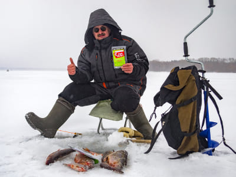
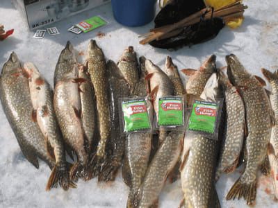
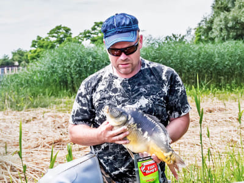

<section class="advantage__section">
    <div class="container">
        <div class="advantage__section-wrapper">
            <h2 class="advantage__section-title">
                Преимущества <br>
                Fish Hungry
            </h2>
            <div class="advantage__block">
                
                <h3 class="advantage__block-title">
                    Эффективно
                </h3>
                <p class="advantage__block-text">
                    Активно используется зимой и летом в реальных условиях. Испытано и протестировано в реках, каналах, озёрах, морях и прочих водоёмах.
                </p>
            </div>
            <div class="advantage__block">
                
                <h3 class="advantage__block-title">
                    Универсально
                </h3>
                <p class="advantage__block-text">
                    Подходит для мирной и хищной рыбы. Наиболее эффективен для ловли карася, карпа, плотвы, линя, а также щуки, окуня, ерша и др.
                </p>
            </div>
            <div class="advantage__block">
                
                <h3 class="advantage__block-title">
                    Экономично
                </h3>
                <p class="advantage__block-text">
                    Одной упаковки хватит на 5 рыбалок. Окупится уже за один выезд, который обеспечит в несколько раз больше рыбы, чем обычно !
                </p>
            </div>
        </div>
    </div>
</section>